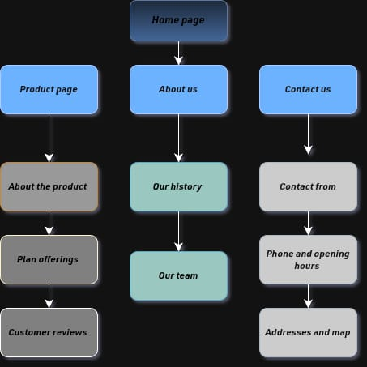

اسم الطالبة:سلمى مصطفى نيازى عبدالله مجاهد
الرقم الجامعي:2501832
أصبحت المنصات الالكترونية والمواقع الالكترونية جزءا أساسيا من حياتنا اليومية؛ حيث نعتمد عليها في التعليم والتسوق والتواصل والحصول علي المعلومات وانجاز العديد من الخدمات وفي عالم تطوير الويب وتصميم المنصات الرقمية غالبا ما يندفع المبرمجون المبتدئون او حتي بعض الفرق نحو كتابة اكوادHTML/CSS مباشرة دون سابق إنذار أو تخطيط مسبق، معتقدين أن الإبداع يبدأ فوراً على شاشة محرر الأكواد. لكن الواقع التقني والعملي يثبت العكس تماماً؛ فالبناء العشوائي غالباً ما يؤدي إلى منتج مشتت، هيكل معقد، وإهدار هائل للوقت والجهد في عمليات التعديل المستمرة، ولم يعد نجاح الموقع الإلكتروني يعتمد فقط على كتابة الأكواد البرمجية، بل أصبح مرتبطًا بمدى جودة التخطيط له، وتنظيم محتواه، وسهولة استخدامه، وقدرته على تلبية احتياجات المستخدمين، وتبدأ عملية إنشاء الموقع الإلكتروني الناجح بفكرة واضحة، ثم تحديد الهدف من الموقع والجمهور المستهدف، وتنظيم الصفحات والمعلومات التي يحتوي عليها، وتصور شكل الواجهة التي سيتعامل معها المستخدم، كما أن التخطيط السليم ورسم هيكل الموقع (Wireframing) يمثلان "الخرائط الهندسية" لأي مشروع برمجي ناجح. تماماً كما لا يمكن لأي مهندس معماري بناء ناطحة سحاب دون رسومات هندسية دقيقة، لا يمكن للمطور بناء منصة إلكترونية ناجحة وسهلة الاستخدام دون تصور بصري مسبق،وتُعد أدوات مثل Draw.io من الأدوات المفيدة في هذه المرحلة، إذ تتيح إنشاء مخططات توضح العلاقات بين صفحات الموقع، ومسارات انتقال المستخدم، والتوزيع المبدئي لعناصر الواجهة، مما يساعد على اكتشاف المشكلات قبل البدء في كتابة أكواد HTML.
يُقصد بالتخطيط المسبق للموقع الإلكتروني وضع تصور منظم لما سيقدمه الموقع، وكيف ستُرتب صفحاته ومحتوياته، وما الوظائف التي سيؤديها، وكيف سيتفاعل المستخدم معه، وذلك قبل البدء في تنفيذ التصميم والبرمجة الفعلية. ولا يقتصر التخطيط على اختيار الألوان والصور أو تحديد شكل الصفحة الرئيسية، بل يشمل مجموعة من القرارات المهمة، مثل تحديد هدف الموقع، ودراسة احتياجات المستخدمين، وتحديد الصفحات الأساسية والفرعية، وتنظيم المعلومات، وتوضيح العلاقات بين أجزاء الموقع المختلفة. فعلى سبيل المثال، عند إنشاء منصة تعليمية للطلاب، يجب التفكير مسبقًا في الصفحات التي يحتاج إليها الطالب، مثل الصفحة الرئيسية، والمقررات الدراسية، والمحاضرات، والواجبات، والاختبارات، والملف الشخصي. كما يجب تحديد كيفية انتقال الطالب من صفحة إلى أخرى، وأين سيجد المعلومات التي يحتاج إليها. ويساعد هذا التخطيط على وضع أساس واضح للمشروع، بحيث تكون البرمجة مرحلة لتنفيذ تصور مدروس، بدلًا من أن تكون سلسلة من المحاولات والتعديلات غير المنظمة.
يُعد رسم هيكل الموقع من الخطوات الأساسية التي تسبق البرمجة؛ لأنه يوضح طريقة تنظيم الصفحات والعلاقات التي تربط بينها. ويمكن تشبيه هذا الهيكل بالمخطط الهندسي للمبنى، فكما يحتاج المهندس إلى تصور وتوزيع الغرف والمداخل قبل البناء، يحتاج مطور الموقع إلى تصور الصفحات وأماكن عناصرها قبل كتابة الأكواد. وتتمثل أهمية رسم الهيكل فيما يلي:
المخططات البصريةهي رسومات توضيحية تُستخدم لتمثيل مكونات الموقع أو خطوات العمل داخله بصورة مرئية ومنظمة. وهي تساعد على فهم العلاقات بين العناصر التي قد يصعب تصورها عند شرحها بالكلمات فقط وتختلف أنواع المخططات حسب الهدف منها، ومن أهمها:
تعدأداة Draw.io المعروفة أيضاً باسمdiagrams.netأداة لرسم المخططات والرسومات التقنية، ويمكن استخدامها في تنظيم الأفكار وتصميم المخططات الهيكلية والانسيابية. وتوفر أشكالًا متنوعة وخطوط ربط وأدوات لإضافة النصوص وتنسيق العناصر، مما يجعلها مناسبة للتخطيط الأولي للمواقع والمنصات الإلكترونية،ويمكن استخدامها في التخطيط للموقع من خلال الخطوات التالية:
تحديد الهدف من الموقع والصفحات المطلوبة.
إضافة مستطيلات أخري تمثل الصفحات الفرعية.
ربط الصفحات بالأسهم لتوضيح طريقة الانتقال بينها.
مراجعة المخطط وتعديله قبل البدء في البرمجة.
وتساعد الأداة علي توضيح شكل الموقع بطريقة بسيطة؛ كما يمكن حفظ المخططات بصيغ pdfأو png وإضافتها إلي التقارير

تُستخدم لغةHTML، وهي اختصار لـ HyperText Markup Language، في تحديد بنية صفحات الويب وتنظيم محتواها، مثل العناوين والفقرات والصور والروابط والقوائم والنماذج. وتظهر العلاقة بين التخطيط البصري وHTML في أن المخطط يوضح للمبرمج ما الذي ينبغي بناؤه، بينما تسمح HTML بتحويل أجزاء من هذا التصور إلى عناصر فعلية داخل الصفحة.فعلى سبيل المثال، إذا أوضح المخطط وجود رأس للصفحة يحتوي على شعار وقائمة تنقل، ومنطقة رئيسية تحتوي على عنوان ومحتوى، وتذييل يتضمن معلومات التواصل، فيمكن للمبرمج استخدام عناصر HTML المناسبة لتنظيم هذه الأجزاء. كما يمكن استخدام CSS لاحقًا لتحديد الألوان والخطوط والمسافات وأحجام العناصر، واستخدام JavaScript لإضافة التفاعل عند الحاجة، مثل الاستجابة للنقر على زر أو التحقق من بعض البيانات المدخلة.وبذلك يساعد التخطيط على تحويل الفكرة إلى خطوات واضحة، بدلًا من البدء في كتابة الأكواد دون تصور مسبق
على الرغم من أهمية التخطيط، فقد تواجه هذه المرحلة بعض التحديات التي تحتاج إلى معالجة مناسبة
| نوع المخطط | وظيفته |
|---|---|
| Sitemap | توضيح الصفحات الرئيسيةوالفرعية |
| Flowchart | توضيح خطوات تنفيذ مهمة معينة |
| Wireframe | تحديد أماكن عناصر الصفحة |
| User Flow | توضيح مسار المستخدم داخل الموقع |
يتضح أن التخطيط ورسم هيكل الموقع قبل كتابةالأكوادمن الخطوات المهمة التي تساعد علي تنظيم المحتوي وتحديد الصفحات وتسهيل استخدام المنصة الالكترونيه، وليس مجرد خطوة إضافية رفاهية، بل هي الركيزة الأساسية التي يرتكز عليها نجاح أي مشروع برمجي. كما تسهم المخططات البصرية وأدوات مثل Draw.io التي توفر علي المطورين وقتا طويلاً، وتقلل من معدلات الأخطاء، وتوضح الأفكار واكتشاف المشكلات قبل كتابة الأكواد، مما يوفر الوقت والجهد ويساعد علي تحسين الموقع.